The Database Wizard in VB NET Express
The first part of the tutorial is here: Database project for Visual Basic .NET Express users
Let's make a start on our Database project. So, once you have your VB software open, do the following:
- Click File > New Project from the menu bar
- Select Windows Application, and then give it the Name AddressBook. Click OK
- Locate the Solution Explorer on the right hand side (If you can't see it, click View > Solution Explorer from the menu bar in versions 2008 and 2012, or View > Other Windows > Solution Explorer in version 2010.)
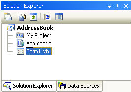
- We need to select a Data Source. So click on Data Sources at the bottom of the Solution Explorer in version 2008:
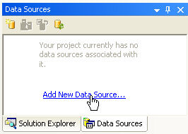
If you have VB NET 2010 or 2012 then the Data Source tab is on the left, just below the Toolbox (If you can't see the tab, click View > Other Windows > Data Sources):
To Add a New Data Source, click on the link. When you do, you'll see a screen welcoming you to the Data Source Configuration Wizard, Just click Next, to get to the screen below:
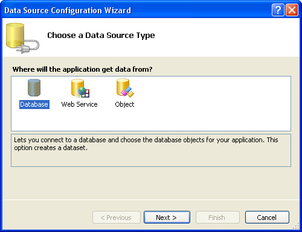
You want to connect to a Database. So select this option, and click Next. In version 2010 and 2012 of VB NET, you'll see this screen appear (you won't see it if you have version 2008):
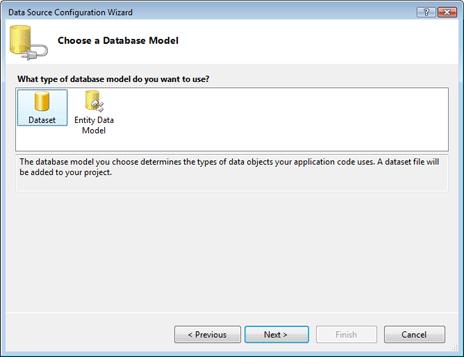
Select DataSet and click Next. You'll then see this screen:
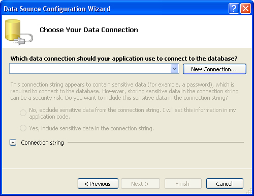
Click the New Connection button and another dialogue box pops up in VB NET 2008:
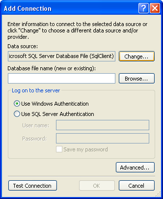
Click the Change button, because we want to connect to an Access database. (The default is for a SQL Server database.) When you click Change, you'll see this (VB NET versions 2010 and 2012 will see this instead of the dialogu box above when clicking the New Connection button):
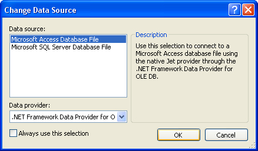
Select Microsoft Access Database File, then click OK. The previous dialogue box will then look like this:
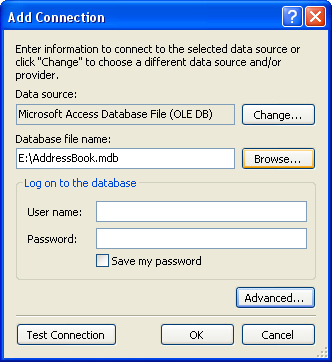
Click the Browse button and navigate to where on your computer you downloaded our Access Database called AddressBook.mdb. Click Test Connection to see if everything is OK, and you'll hopefully see this:
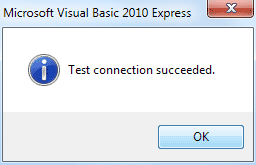
Click the OK button, then click the OK button on the Add Connection dialogue box as well. You will be returned to the Data Source Configuration Wizard, which should now look like this:
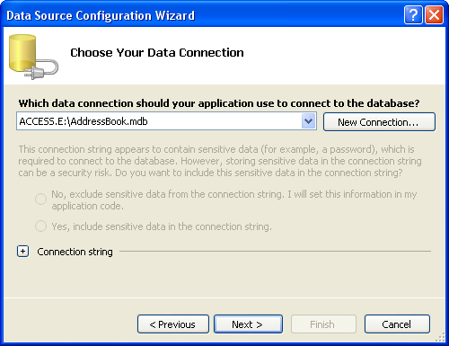
Click Next to move to the next step of the Wizard. You may see a message box appear, however. Click No on the message box to stop VB copying the database each time it runs. You should then see this:
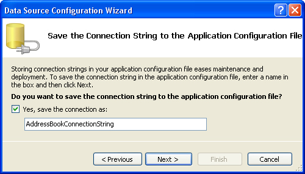
Make sure there's a tick in the box for "Save the connection", and then click Next:
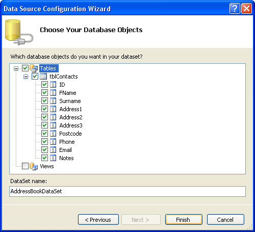
Here, you can select which tables and fields you want. Tick the Tables box to include them all. You can give your DataSet a name, if you prefer. Click Finish and you're done.
When you are returned to your form, you should notice your new Data Source has been added:
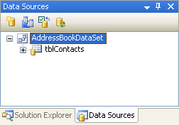
The Data Sources area of the Solution Explorer (or Data Sources tab on the left) now displays information about your database. Click the plus symbol (arrow symbol in version 2012) next to tblContacts:
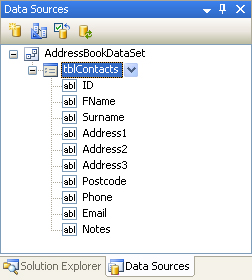
All the Fields in the Address Book database are now showing.
To add a Field to your Form, click on one in the list. Hold down your left mouse button, and drag it over to your form:
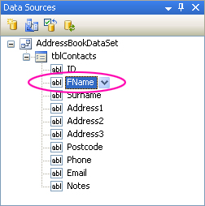
In the image above, the FName field is being dragged on the Form. Your mouse cursor will change shape.
When your Field is over the Form, let go of your left mouse button. A textbox and a label will be added. There are two other things to notice: a navigation bar appears at the top of the form, and a lot of strange objects have appeared in the object area at the bottom:
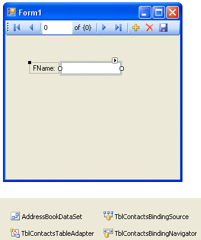
We'll explore the Objects in a later section. But notice the Navigation bar in blue. Run your programme by hitting the F5 key on your keyboard. You should see this:
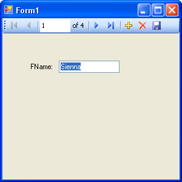
Click the Navigation arrows to scroll through the database. When you've played around with the controls, stop the form from running, and return to Design View.
Drag and Drop more Fields to your form. But don't align them yet. We'll see an easy way to do this. But once you've dragged the fields to your form, it might look like this:
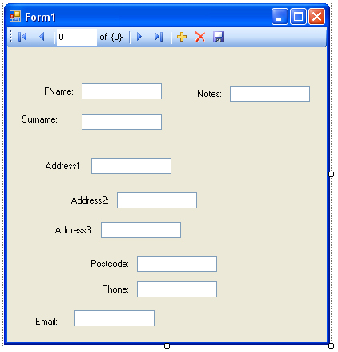
I'm sure you'll agree - that's a very untidy form. But there's a very easy way to align all your controls. Try this:
- Click on a Textbox and its label with your left mouse button
- Hold down the Ctrl key on your keyboard, and select a second Textbox and label
- With the Ctrl key still held down, click each Textbox and label in turn
- When all Textbox and labels are selected, click on the Format menu at the top
- From the Format menu select Align > Lefts. The left edges of the Textboxes will align themselves
- From the Format menu select Vertical Spacing > Make Equal. The space between each textbox will then be the same
For the Notes Textbox, set the MultiLine property to True and resize the textbox. With your new controls added, and nicely aligned, press F5 to run your form. Your form might then be something like this:
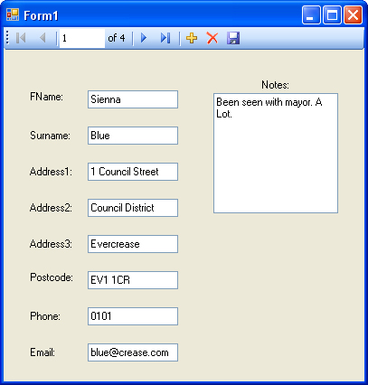
Click the Navigation icons to move backwards and forwards through your database.
In the next part, you'll move away from the Wizards and learn how to add your own programming code to open up and manipulate databases.